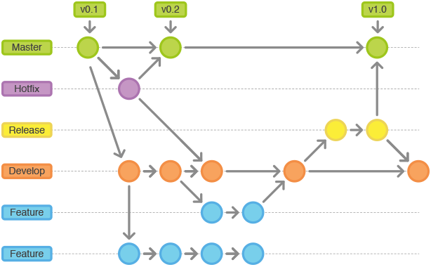
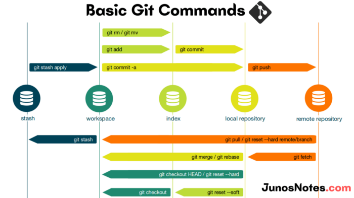

Git, Git Flow, Github Kavramları ve Bazı Git Komutları
Temmuz 30, 2022
Hoşgeldin, nasılsın? Bugün yazılımcıların baş köşesinde bulunan “Git” kavramı ve
Github’a dair birkaç içeriği seninle paylaşmak istiyorum.
Bu yazı içerisinde elbette hatalarım eksiklerim olabilir. Bana iletirsen, beraber
düzeltebiliriz. 👋
Yazılım başlı başına ekip olarak gerçekleştirilmesi gereken bir iştir. Kendi içerisinde
kapsadığı alanın her bir noktasında uzman olmanız
maalesef söz konusu bile olamaz. Bu yüzden beraber çalışma, ekip anlayışı, kademeli
geliştirme her büyük projenin vazgeçilmezidir.
Git, bu çalışma karmaşısını engellemek, ekip olarak geliştirmenizi desteklemek ve ayrıca
size güvenilir, gelişime açık bir geliştirme ortamı sunar.
Git’e dair birçok içerik anlatılabilir. Bu yüzden genel kapsamı bir miktar büyük blog
içeriği seni bekliyor. Buradaki terimleri temel alarak araştırmalarına
bir başlangıç noktası oluşturabilirsin. Umarım bu blog gönderisi sana yeni bilgiler
katar.
Hadi başlayalım!
🏹 Tüm Git kavramı hakkında bilgi alabilmek için aşağıdaki link üzerindeki dokümanı
mutlaka incelemeni öneririm.
Türkçe Git 101
(bilgi.edu.tr)
Git Book
Git Nedir?
Basit bir biçimde ele alacak olursak “Versiyon Kontrol Sistemi”dir. Linux’un geliştiricisi olan Linus Torvalds tarafından dosyaların etkin takipinin yapılması ve projenin hızlı geliştirilmesi için oluşturulmuştur.
Versiyon Kontrol Sistemi Nedir?
(Kaynak Kod Yönetim Sistemi adı da verilir.)
Bir döküman (yazılım projesi, ofis belgesi vb.) üzerinde yaptığınız degişiklikleri adım adım izleyen, istediğinizde kayıt eden, güvence altına alan, herhangi bir hata durumunda geri dönebilmenizi sağlayan ve isterseniz bunu internet üzerindeki bir bilgisayarda veya yerel bir cihazda (respository / repo / depo) saklamanızı ve yönetmenizi sağlayan bir sistemdir.
Git’in Alternatifleri Nedir? Ne için Kullanılması Gerekir?
Git’in birçok alternatifleri bulunmaktadır. Fakat sektör içerisinde bulunan taleplere en efektif, etkili cevabı veren ve genel kullanımı bulunan versiyon sistemi Git’tir. Git'in diğer versiyon sistemleri göre daha fazla tercih edilmesinin ve genel versiyon kontrol sistemlerinin kullanılmasının birçok sebebi vardır. Bunlardan bazıları;-
Esnek ve Dağınık Bir Yapısı
Bu durumu açıklayacak olursak Git sistemi içerisinde projemizi kendi local’imizde, sunucu üzerinde ve projeler içerisinde branch (dal) yapıları ile birçok küçük parçaya ayırabilir, güvenilir bir şekilde proje geliştirme süreci sürdürebiliriz.
-
Çoklu Kişi Desteği / Ekip Yapısına Uygunluk
Yukarıda bahsettiğimiz esnek yapı birçok kişinin bir proje üzerinde aktif olarak farklı kısımlarda çalışma esnekliği sağlar. Örneğin siz kullanıcı giriş işlemleri ile uğraşırken, takım arkadaşınız sizinle çakışmayan ana menü işlemleri ile yakından ilgilenebilir. Oluşturduğunuz kod tüm ekip üyeleri tarafından her yönden incelenebilir.
-
Zaman
Geliştirme ortamına kolay ve güvenilir ulaşım ile birlikte hatalar olması sonucunda geriye dönük güvence sağlar. Bu da bir hatanın veya projeye ulaşımın aldığı süreyi kısaltmada etkilidir.
-
Güvenilirlik
Dosyalarınızı hata durumunda eski versiyonlarına geri döndürebilir veya sunucudan tekrar eski versiyonu edinebilirsiniz.
-
Hata Payında Azalma, Etkin Gelişim
Yapmış olduğunuz geliştirmeler sizden bilgili ekip liderleniz, takım arkadaşlarınız tarafından aktif olarak rahatlıkla incelenebilir. Bu durum projenizin test edilebilirliğini arttırmasının yanı sıra maliyetleri en aza indirgeyecektir.
-
Deneme ve Yanılmaya Açık
Projeniz içerisinde dosya ve bilgi kaybetme korkusu olmadan yeni fikirleri deneyebilir, sınayabilirsiniz.
Bunun gibi birçok duruma dair eklemeler yapılabilir. Fakat ne için kullandığımız bence anlaşıldı. Çok sıkılmadan devam edelim.
Github Nedir?
Github ise Git sistemi ile birlikte çalışan dosyaları depoladığımız host
servisidir. (Yazılımcıların savaş alanıdır ! 😂 Şaka şaka.) Birçok kişinin
çalışmalarını ve içeriklerini paylaştığı, bir yandan da projelerini
saklayabildiği bir depolama servisidir.
Örneğin: KaganCanSit (Kağan Can Şit)
(github.com)
Git Bize Ne Sağlar?
Birden fazla yerde (dağıtık olarak) dosyalarınızı ve versiyon kontrol bilgilerinizi
depolayabilirsiniz.
Böylelikle cihaz bağımsız olarak dosyalarınıza erişebilirsiniz.
“commit” yaparak SnapShot (anlık görüntü) özelliği ile istediğiniz zaman proje veya
dosyaların o anki halini kayıt altına alabilirsiniz.
Böylelikle ileride bir hata ile karşılaşırsanız herhangi bir zamandaki herhangi bir
versiyona dönüş yapabilirsiniz.
SnapShot alındıktan sonra değişiklik yapılan dosyaları görebilirsiniz. Bu durum
gerçekleştirilen proje içerisinde farklıklıklar ve
gelişim aşamalarını görmenizi sağlar.
Takımların aynı projede beraber çalışmasına imkan verir. “Kim neyi düzenledi? Ne
ekledi? Ne çıkarttı? Son değişiklik ne zaman yapıldı?”
gibi bilgilere erişebilirsiniz. Bu sayede topluluk ile proje geliştirme süreçlerini
kolaylaştırabilirisiniz.
Projede versiyonlanmasını istemediğiniz dosyaları belirtebilirsiniz.(node_modules,
.mp4, .log, .env gibi)
Bu sayede temiz bir biçimde dosya yönetimi de sağlayabilirsiniz. Boyut içinde birçok
avantajı bulunur. Bu dosyaları ise ”git ignore” dosyası içerisinde uzantılarını
belirtmeniz yeterlidir.
UYARI:
Bu aşamadan sonra anlatacaklarım “Git” kavramının açıklanmasından daha çok Git’in
nasıl kullanılacağına dair temel komutlar ve kavramlar
üzerine ilerleyecektir eğer “Git” kullanmak için yeni başlıyorsanız, kafa
karıştırıcı olabilir. Bunun için aşağıdaki ücretsiz eğitimlere mutlaka göz atın.
Bu içerikler sizlere iyi derecede bilgi sağlayacaktır.
Git,
GitHub ve GitLab Kullanımı — YouTube
GIT
Versiyon Kontrol Sistemi Nedir? Dersi | Patika.dev
İleri Seviye GIT Dersi |
Patika.dev
GIT
| Versiyon Kontrol Sistemi Olmadan Projelerimizi Düzenleyebilir miyiz? #1 —
YouTube
Şimdi anlaştıysak devam edebilirsin.
Git Flow Mekanizması
Yazılım geliştirme baştan sona büyük bir kapsama sahip olan bir süreçtir.
Geliştirilen
projeye göre kapsam ve derinliği değişse de hizmet veren bir yazılım geliştirmek
için
çoğu zaman bir yaşam döngüsü, çeşitli geliştirme ve test araçlarını bünyesinde
barındırır.
Bu gelişimin ana yapılarından biri de” Git Flow” mekanizmasıdır.
Genel olarak kullanılan flow yaklaşımı;
Yazılım geliştirme süreci içerisinde yazılım yaşayan bir yapıya sahiptir. Anlık
olarak hem kullanılan,
hem geliştirilmeye devam eden, hem de sektörde kendisinden beklenenleri karşılamaya
çalışan bir yapıya
sahiptir. Bu sebepler doğrultusunda geliştirme sürecinde karmaşıklık çıkmaması adına
geliştirme süreci
“Git” gibi araçlar yardımıyla yürütülür.

Genel olarak geliştirme süreci Master, Hotfix, Develop, Remove olmak üzere 4 adet geliştirme branch (dal) ‘ına sahiptir. Fakat kesinlikle bu şekilde olacak diye resmi bir kural yok. Projeden projeye farklılık gösterebilir.
- Master→ Bu branch (dal) kararlı ve belirli bir süreç sonucunda pişmiş olan aktif olarak kullanıcığının kullandığı versiyonları barındırır. Bu branch(dal) için genellikle geliştiricilerin yetkisi bulunmaz. Master’a sürüm çıkma ve yeni bir içerik ekleme görevi ekip yöneticilerinin sorumluluğundadır. Geliştiricilerin bu dal ile yakından ilişkisi bulunmaz.
- Hotfix → Aktif olarak kullanıcıya sunulan sürümde bulunan hatayı düzeltmek amacıyla kullanılır. Genellikle küçük çaplı anlık geliştirmelerde etkilir. Hotfix sonucu ulaşılan versiyon hem master hem developer branch(dal)’larına eklenir, güncellenir.
- Develop→ Geliştiricilerin temel olarak baz aldığı ana versiyon sürümü olarak kullanıcıya sunulmadan önce geliştirilmeye devam ettiği ve sınama, test, dokümantasyon düzenlemelerini aktif olarak sürdürdüğü branch(dal)’dır. Fakat bu dal içerisine eklemeler direk olarak yapılmaz veya direk bu dal içerisinde geliştirme aktif değildir. Gelişim “Feature” brach(dal)’ları aracılığıyla ilerler.
- Feature→ Geliştirici bir geliştirme yapmak istediğinde develop branch(dal)’ın son halinden bir yeni dal oluşturarak burada çalışır. Bu geliştirmenin aktif olarak yapıldığı dala “Feature” adı verilir. Özellik geliştirmesi sonrası test ve diğer ekiplerin sınaması sonrasında merge(birleştirme) işlemi gerçekleştirilerek oluşturulan ek feature dalı silinir. Bu geliştirme ve özellik ekleme dallarının ömürlerinin kısa olması gereklidir. İşlem sonrası silinerek karmaşıklık önlenmelidir.
! Yukarıdaki şekilde developer ve feature dallarının (branch) kullanımı develop branch’ının her daim testleri ve içeriği ile hazır durumda olmasını, sürüme çıkmaya hazır bir şekilde bulunması sağlar. Çünkü yazılım geliştirme, özellik ekleme süreçlerinde kademeli olarak birden fazla kişinin kontrolü, ek olarak bilgi birikim desteği bulunur.

Git En Çok Kullanılan Komutlar
Git’e biraz hakimim, duruma özel kullanabileceğim komutu arıyorum diyorsan aşağıdaki
adrese direk göz atabilirsin.
Git Explorer

- git config — global user.name “Name Surname”
- git config — global user.email “test@gmail.com” Bu ayarlara dair bilgileri görüntülemek için aşağıdaki komutu kullanabilirsin;
- git config — list
git: Git’in kurulu olduğunun kontrolü ve kullanılabilir bazı komutları console üzerinde döndürür. Bu sayede git’in kurulmuş olduğuna emin olabilir, ek olarak listelenen komutlar hakkında bilgi alabilirsin.
git version: Git’in versiyonunu öğrenmenizi sağlar.
git init: Proje başlatma komutudur. Versiyon kontrolü altında olmayan bir projenin dizininde, boş bir git deposu oluşturmak için kullanılır. Bu sayede klasör içerisinde geliştirme yaparken “commit” komutu yardımıyla kendi versiyonlarınızı saklayabilir ve tutabilirsiniz.
- Tek seferde bütün dosyaları eklemek için ise; git add . veya git add * , git — all veya git add -A gibi komutlar kullanılabilir.
- git add -p > İnteraktif bir şekilde depoya eklenecek dosya içeriklerinin seçilmesini sağlar.
git rm “dosya veya klasor_name”: Depo içerisinde bulunan bir dosyayı silmemizi sağlar.
git remote -v: Remote bağlantı adresimizi belirtir. (https://github.com…..) Git sistemi ile kendi Github adresinizi bağladığınız oluşturmuş olduğunuz proje dosyalarını Github kod deponuza gönderebilirsiniz. Bu komut ikisi arasında bağ oluşturduktan sonra kontrol etmek amacıyla kullanılabilir.
- git branch branch_name”: Projenize yeni bir branch eklemek için kullanılır.
- git branch -a / git branch: Tüm uzak ve yerel branch’ları listelemek için kullanılır.
- git branch -r: İlişkili, kullandığımız brach’ı döndürür.
- git branch -d “branch_name”: Branch silmek için kullanılır.
- git checkout “branch_name” : Mevcutta var olan branch’a geçiş yapmak için kullanılır.
- git checkout -b “branch_name” : Yeni bir branch oluşturup, bu branch’a geçiş yapmak için kullanılır.
- git checkout “commit_ID” : Commitler arası geçiş yapmak için kullanılır. (Eski bir versiyona dönmek istediğimiz zaman)
- Eğer iki ağaç birleştirilirken aynı noktalarda değişim bulunursa bu durumlara conflict ismi verilmektedir. Bunun gibi oluşan durumlarda çakışan kısımların düzeltilmesi ve gözden geçirilmesi gerekir. (release)
- On branch main -> Main branch’ınde olduğumuzu,
- Changes to be commited -> Commit’lenmeye hazır değişiklikler olduğunu,
- Modified: index.html -> index.html dosyasında değişiklik yaptığımızı,
- Deleted: styles.css -> styles.css dosyasını sildiğimizi,
- Changes not staged for commit -> Üzerinde değişiklik yapılan ama staged ortamına gönderilmemiş dosyaları ifade eder.
- Untracked files -> Takibi yapılmayan dosyaları ifade eder.
git reflog: Yerel bir deponun tarihçesini yani dal bünyesinde olup bitenlerin listesini bizlere gösterir.
git log --graph: Genel bilgilendirmeleri bir ağaç yapısı ile bize sunar.
- git remote add origin http://uzak_deponun_adresi.git
- git push origin feature
- Diğer bir kullanım ise ağaca yönelik olabilir. git push origin “branch_name”
- git push push — force: Sunucu üzerindekini ezerek bizim local’imizdekini baz alır.
git pull: Uzak bilgisayardan proje klasorünü getir. (Geri getir.) Github üzerindeki bulunan haline bulunan mevcut kodu eşitler.
git fetch “remote-repo” “branch”: Bu komut uzak sunucudaki dosyaları local’e getirir. Fakat var olan kodumuz ile pull gibi birleştirme yapmaz. Local olarak tutar. Bu sayede commit’lemeden önce branch’lar ve kod arasındaki olabilecekleri bakmamıza sağlar.
git log: Projedeki commit geçmişini görüntülememizi sağlar. Bütün commit’ler, id’si, yazarı, tarihi ve mesajı ile beraber listelenir. (git log — oneline)
git clone: Projenin kopyasını kendi local’inize almanızı sağlar.
git rm “dosya ve klasor_name”: Dosya ve klasör silmek için kullanılır.- git rm — cached “dosya ve klasor_name”: Git sistemine eklenmiş ve takip edilen bir dosyayı, takip edilmez olarak işaretler. Bu sayede bu dosyaya dair değişikliklerin takibi bırakılır.
- Örneğin bir uygulama derlendikten sonra oluşan .dll ya da .class ekli dosyaların depoya eklenmemesi gerekir, çünkü bu tür dosyalar yapılandırma (build) işlemleri esnasında sürekli yeniden oluşturulurlar.
git diff: Repository üzerinde yapılan değişikliklerden sonra dosyalar arasında oluşan farklılıkları gösterir.
git diff “commit_id_1”..”commit_id_2": İki commit arasındaki farklılıkları görmek için kullanılır.
git clean: Clean komutu ile dizin içinde bulunan ve indexe henüz eklenmemiş tüm değişiklikleri yok edebiliriz.- git clean -n: Hangi dosyaların silineceğini görmemizi sağlar.
- git clean -f: Listelenen dosyaları siler.
- git clean -f “dizin_ismi/”: Dizin silmek için kullanılabilir.
git commit — amend: Belirli önceden oluşturulmuş bir commit’e ek yapmak için kullanılır.
git commit — amend -m “Bu yeni bir mesaj”: Var olan commit’in açıklamasını değiştirmek için kullanılır.
git revert “hash_degeri”: Yanlışlıkla atılan commit’i nasıl geri alırız?- Geri almak istediğimiz commit’in HashID’sini git log ile bakarız.
- Daha sonra git revert 165194161(HashID) yazarak atılmış olan commit’i geri alabiliriz.
- Geri alınmış commit’i tekrar geri alarak eski haline getirebiliriz. Yine aynı şekilde log’dan bakarak HashID ile gerçekleştireceğiz.
- git log kullandıktan sonra silinmesini istediğimiz yerin bir öncesinde commit’in HashID’sini alıyoruz.
- Daha sonra “git reset — hard HashID” ile bu işlemi gerçekleştirebiliriz. Seçtiğimiz yere kadar olan log’lar silinecektir.
- git diff HashID1 . . HashID2 index.md
- git diff HashID1 . . HashID2: Daha az bilgi içeren kaba karşılaştırma.
- “git stash list”le de tüm kayıtları görebiliriz.
- “git stash list”le de tüm kayıtları görebiliriz.
- “git stash apply” en üstteki kayıdı getirir. Kayıtı bellekten silmez.
- “git tag” ile var olan etiketleri görüntüleyebiliriz.
- Örnek kullanım > git tag -a v3.0.0 -m “3.0.0 version created” > -a parametresi verilen tag’ı belirtir. -m ise açıklama eklememizi sağlar.
git show “hash_degeri”: Belirli bir commit bilgisini görüntülememizi sağlar.
Interactive rebase kavramı nedir?
- Bir branch üzerinde var olan commit’ler üzerinde mesajların, dropların değişmesi gibi olsa da asıl önemli kullanımı brach üzerinde var olan bütün commit’lerin tek commit haline getirilerek birleştirilmesi. Bu durum bizlerin var olan branch’dan ana branch’a merge etme işimiz sırasında tüm commit’leri kontrol etme durumumuzu ortadan kaldırır. Çakışma bulunmayan veya önlenebilir noktalarda tercih edilmelidir.
- Bu yöntemin problemleri yukarıdaki rebase kavramı üzerinde incelenebilir.
- untracked (izlenmeyen): Git tarafından henüz takip edilmeyen, yani yeni oluşturulmuş dosyaları ifade eder.
- unstaged (hazırlanmamış): Güncellenmiş ancak commit’lenmek için hazırlanmamış dosyaları ifade eder.
- staged (hazırlanmış): Commit’lenmeye hazır olan dosyaları ifade eder.
- deleted (silinmiş): Projeden silinmiş ama Git üzerinden kaldırılmamış dosyaları ifade eder.
- branch (dal): Geliştirme ortamı içerisinde bulunan dosyalama ve yönetim yapısı olarak düşünülebilir. Ağaç dalları ile aynı mantıkta değerlendirilebilir. Bir daldan üretilen ayrılan dal, üretildiği ağacın içeriğini barındırır. Ağaç mantığından farklı olarak birleştirme işlemi uygulanabilir.
- flow: Akış ve ilerleyiş anlamına gelir.